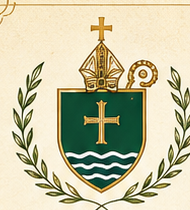
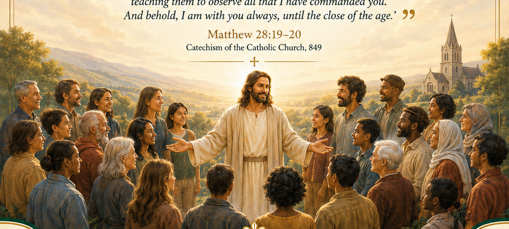

Diocese of Limerick
Parish of Kilcornan
St. John the Baptist
Pastoral Parish Council
Election Process
The Church strives to preach the Gospel to all people. Therefore, “Go therefore and make disciples of all nations, baptizing them in the name of the Father and of the Son and of the Holy Spirit, teaching them to observe all that I have commanded you. And behold, I am with you always, until the close of the age.”
Matthew 28:19–20 Catechism of the Catholic Church, 849

How do we as a parish
live out our missionary mandate?
- Small Christian communities
- Joyfully worshipping God
- Involving and developing youth
- Supporting and caring for each other
- Catechetical programmes
- Adult faith formation
- Baptism preparation
- Supporting families and marriages
- Uplifting the poor
- Caring for the sick, homebound, marginalized, refugees and migrants
- Counselling the bereaved
- Introductory programmes such as Alpha and others